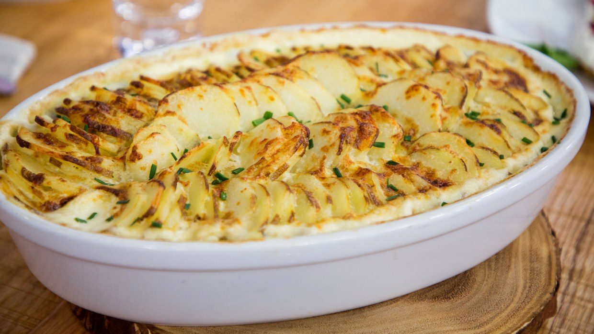

Scalloped Potatoes

The sliced potatoes make this a pretty dish, and the cream and cheese mixture tastes like heaven.
6 tbspunsalted butter, plus softened butter for the baking dish- Kosher salt
3 poundsmedium-large potatoes (about 6-8 potatoes), scrubbed, peeled and cut crosswise into 1/4-inch-thick slices½ cupminced onion (optional)6cloves garlic, minced2 tbspflour2 cupsheavy cream1 cupwhole milk8 ouncesGruyere cheese, grated (about 2 cups)½ tspfreshly ground black pepper2 tbspminced chives, for garnish
Preheat the oven to 350°F. Butter a 9- by 13-inch baking dish.
Bring a large pot of generously salted water to a rolling boil. Add the potatoes and simmer until just tender but not falling apart, about 8 minutes. Drain thoroughly and set aside.
In a medium saucepan, melt the 6 tablespoons butter over medium heat. Add onions if used and sauté for 4-6 minutes. Add the garlic and sauté over medium-low heat until softened and fragrant, about 30 seconds. Increase the heat to medium, whisk in the flour, and cook, stirring constantly, for 2 to 3 minutes, until lightly browned and fragrant.
Whisking constantly, slowly pour in the cream and milk and continue whisking until the sauce is smooth. Add the Gruyère, 1/4 teaspoon salt and the pepper and cook, whisking gently, until the cheese is melted.
Arrange the potatoes in the prepared baking dish and pour the sauce over them. Bake until warmed all the way through and lightly browned on top, 25 to 30 minutes. Top with the chives and serve.
TECHNIQUE TIP: Store leftovers in an airtight container in the refrigerator for up to 3 days. Reheat in a 300°F oven.